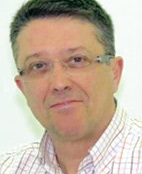
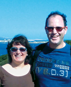
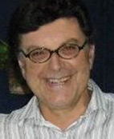

Collaborators
Llorenç Allès Camps. Ferreries 1979, resident in Ciutadella since 2007. Journalist who has worked in the press, radio and television. Current job editor of the Diario Menorca.
 Cristòfol Barber Villalonga. (Es Mercadal, 1978). Historian who works as an archivist and librarian. He is the author of diverse publications on local themes, and is the co-author of "Històries des Mercadal, 101 testimonis en primera persona".
Cristòfol Barber Villalonga. (Es Mercadal, 1978). Historian who works as an archivist and librarian. He is the author of diverse publications on local themes, and is the co-author of "Històries des Mercadal, 101 testimonis en primera persona".
 Pedro J. Bosch. Ophthalmologist, journalist and writer. He has been head of the ophthalmology department in the Monte Toro hospital and President of the Athenaeum in Maó. He has published 5 novels and 4 books of articles and essays. He collaborates with the Diario Menorca and El País.
Pedro J. Bosch. Ophthalmologist, journalist and writer. He has been head of the ophthalmology department in the Monte Toro hospital and President of the Athenaeum in Maó. He has published 5 novels and 4 books of articles and essays. He collaborates with the Diario Menorca and El País.
 Pau Faner. Writer, he has published over 30 books and has been awarded some of the most prestigious prizes in Catalan and Castilian narratives, he is also a painter.
Pau Faner. Writer, he has published over 30 books and has been awarded some of the most prestigious prizes in Catalan and Castilian narratives, he is also a painter.
 Joana Gual. History degree from UIB (Balearic Universtity). Postgraduate in archaeological heritage management from UOC (University of Catalonia). Technician for historic heritage for the Consell Insular de Menorca (Island Council).
Joana Gual. History degree from UIB (Balearic Universtity). Postgraduate in archaeological heritage management from UOC (University of Catalonia). Technician for historic heritage for the Consell Insular de Menorca (Island Council).
 Juan Juanico Petrus. Technician in business and touristic activities. Consultor Medioambiental, MBA in General Accounting and Economic Financial Analysis.
Juan Juanico Petrus. Technician in business and touristic activities. Consultor Medioambiental, MBA in General Accounting and Economic Financial Analysis.
Miquel Àngel Limón Pons. Born in Alaior, doctorate en journalism, numerical member of IME (Menorca Study Institute).
Miquel Àngel Marquès. History degree. Archivist and in his free time investigates and studies the history, culture and heritage of Menorca with the intention of sharing the information.
 Xavier Martin. Philosophy professor at the Cap de Llevant School in Maó and member of the IME. He has published different books and articles on Menorcan thems, especially the history of theatre in Menorca.
Xavier Martin. Philosophy professor at the Cap de Llevant School in Maó and member of the IME. He has published different books and articles on Menorcan thems, especially the history of theatre in Menorca.
Pere Riudavets i Fayas. Magisterial qualifications and a degree in Philosophy. Teacher at the Francesc d'Albranca in Migjorn Gran. He likes reading, writing, teaching, conversation and walking.
 Natàlia Sans Rosselló. History and Geography degree, music teacher, and investigator of traditional culture. She is passionate about real life stories.
Natàlia Sans Rosselló. History and Geography degree, music teacher, and investigator of traditional culture. She is passionate about real life stories.
 Adolf Sintes. Anthropological and Ethnological investigator about Menorca. Author of varios books and habitual collaborator in diverse mediums. Member of the IME.
Adolf Sintes. Anthropological and Ethnological investigator about Menorca. Author of varios books and habitual collaborator in diverse mediums. Member of the IME.